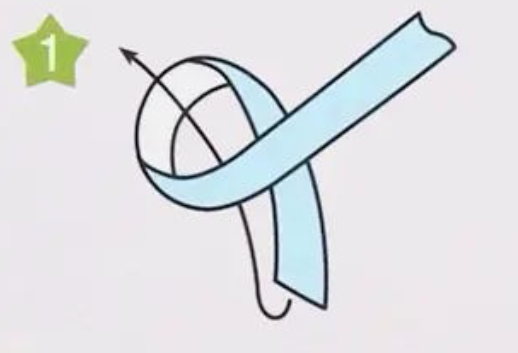
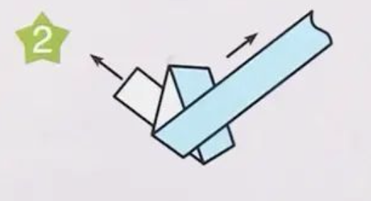
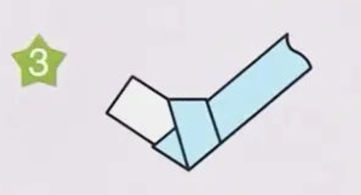

Steps In Making Paper Stars!
A guide to my latest obsession 💫
Step 0
Cut paper into thin strips or purchase pre-cut paper. You can also used lined paper such as pad/writing paper
Step 1
Make a loop with the paper. Make sure there is a longer and a shorter part.
Step 2
Insert the shorter end of the paper and flatten the loop. There should be some extra paper sticking out of the main shape.
Step 3
What the paper should look like after the 2nd step:
